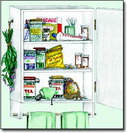
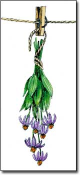
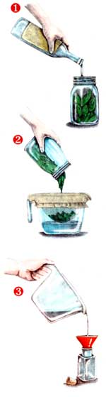

One of the advantages of herbal medicine for gardeners is that many herbs are easy to grow. In fact, a number of medicinal plants commonly are grown as ornamentals. And why go to the store to buy echinacea when you can grow this lovely flu-fighting herb in your own yard?
Even if you don't choose to grow herbs yourself, the basic ingredients for many herbal remedies can be purchased in health food stores and prepared in your own kitchen. When I first started working with medicinal plants, I discovered the trick was not in finding the herbs I needed but in knowing how to use them. Then I found Making Plant Medicine, a book by Richo Cech, the owner of Horizon Herbs in Williams, Ore. That book changed my life because it taught me how to make first aid, health and beauty products right at home.
Below are directions from the book for making the basic applications often used in herbal medicine - capsules, poultices, tinctures, infused oils, salves, balms and teas - along with examples of easy-to-grow herbs to use for each kind of preparation. (For more information on herbs and holistic medicine, see "Holistic Health Care," Page 90.)
Encapsulating Herbs
One simple way to consume medicinal herbs is to swallow them in capsules. To prepare capsules, simply grind the dried roots, leaves or blooms of the plant and fill capsules with the resulting powder. You can grind dried plants with an old-fashioned mortar and pestle, or try using an electric blender or coffee mill. Capsules are inexpensive and available in many health food stores; one 00-sized capsule can hold about 500 milligrams of a dried herb, but weigh your own to get an exact measurement.
Echinacea, for example, is a general immune-system enhancer often taken this way. Several species have medicinal value, but E. purpurea is one of the easiest to grow. For use in capsules, harvest and dry the above-ground portions of the plant. Taken at the first sign of a cold or flu, echinacea can be effective in boosting your immunity and relieving symptoms. The recommended dose for treating a cold is 900 milligrams a day, according to the German government's Commission E guidelines, which often are used as a standard for herbal dosages.
Poultices
A poultice is vegetable material, whole or mashed, which is applied externally so that the herb's properties can be absorbed by the skin. Poultices are often used to reduce inflammation, improve circulation and speed the healing of cuts, scrapes and other sores.
Comfrey, for example, has anti-inflammatory and cell-regenerating properties that can make an effective poultice for treating bruises and sprains. A comfrey poultice can be made with fresh or dry leaves - just moisten them and apply as a half-inch-thick layer, placed directly on the affected skin. Bind the poultice in place with a clean cloth.
Comfrey should not be used on deep puncture wounds because the surface can heal too quickly, trapping infection-causing bacteria inside the wound. Used externally, comfrey generally is considered safe.
Tinctures
A tincture is made by soaking fresh or ground herbs in alcohol to extract and preserve the active constituents of the plant. One of the advantages of tinctures is their long shelf life - most will keep for a year or longer.
Many tinctures are intended to be taken internally; often they are diluted with water and then swallowed. However, some tinctures are meant to be applied directly to the skin. For example, calendula flowers make a good first-aid tincture for treating cuts, scrapes and bruises because of the herb's antibacterial properties.
Different tincturing methods can be used, but Cech favors this approach: Begin by grinding the dried herb, or by finely mincing fresh herbs, and placing them in a quart jar. For calendula, dry the flowers and then grind them to a powder. Cover the ground or minced herbs with vodka or pure grain alcohol. If you opt for vodka, use at least 40 proof for dried herbs and 80 proof for fresh herbs; if you use pure grain alcohol, pair it with dried herbs and dilute the alcohol with distilled water at a 1-1 ratio.
Let the mixture sit, covered, for three weeks, and shake the jar daily. (Fresh herbs must remain submerged during this time because exposed plant material can rot.) After three weeks, strain the contents of the jar using a thin, clean cloth and then press the cloth to squeeze out every drop of liquid. Let the separated liquid sit overnight to settle, and then strain it again. Store the resulting herb-infused alcohol in a labeled bottle for future use.
Infused oils
Some herbs have active constituents that will dissolve in vegetable oil. The resulting infused oils can be used directly by massaging them into the skin or as a base for other products such as skin creams, salves and lip balms.
Oil infused with St. John's wort, for example, is good for treating bruises, sprains, swellings, hemorrhoids and scars. Both hot- and cold-techniques can be used for infusing oils; with St. John's wort, combine one part fresh flowers and leaves by weight with three parts by volume of oil.
For the hot method, place the oil and the St. John's wort in a crock pot and maintain a 110- to 120-degree temperature for two weeks. Stir daily, and at the end of the two-week period, strain the oil. For the cold method, combine the oil and herb, and then allow the mixture to sit at room temperature for at least two weeks, or until the oil has taken on the color and flavor of the leaves. Make sure the leaves remain fully submerged. Putting the infused oil in the sun will help speed the extraction process.
Although generally considered safe, St. John's wort can cause photosensitivity in some people.
Salves and Balms
Infused oils can be thickened into salves and balms, which many people find more convenient and less messy than the oil. Use dedicated pans and spoons to make salves and balms.
To make a salve, add two tablespoons of melted beeswax to each cup of infused oil. Melt beeswax carefully in a double boiler or over a very low flame; beeswax is flammable when overheated. (Look for beeswax online, in health food stores or from beekeepers.) Reheat the oil just enough for the wax to mix well, then let it cool. If the salve is too thick, add more oil; too thin, more wax. Oil-based salves can turn rancid over time. To help prevent this, vitamin E can be added as a preservative. In some cases, the addition of glycerin makes a smoother salve, particularly for skin creams.
All of the above preparations are called "simples" because they involve only one herb. When more than one herb is combined in such a preparation, the whole can be greater than the sum of its parts. An example of this is the Basic Balm (see recipe, Page 84); it has greater skin-toning and healing properties than a typical commercial body lotion.
For maximum effectiveness, infuse herbs individually and then combine them; more practically, infuse all the herbs for a single recipe together. Be sure to use either fresh or dried herbs; fresh herbs should be chopped or crushed before measuring.
Teas
Herbal tea is another remedy made by combining multiple herbs, and most medicinal herbal teas are stronger than those sold for drinking like regular tea. To brew a medicinal tea useful for treating upset stomach, particularly as it relates to over-eating, combine equal parts of fresh or dried catnip, peppermint and chamomile. Pour a cup of boiling water over a rounded tablespoon of the herbs and let them steep for at least 15 minutes. Strain, if necessary, and drink, hot or cold. Alternatively, using do-it-yourself tea bags will eliminate the need to strain the tea.
Richo Cech's Making Plant Medicine, and The Village Herbalist by Nancy and Michael Phillips, from which the illustrations on page 83 and 84 came, are available on Mother's Bookshelf, Page 111.
Basic Balm
3 cups olive oil
10 tablespoons comfrey leaves
10 tablespoons calendula flowers
8 tablespoons lavender flowers
5 tablespoons plantain
5 tablespoons yarrow flowers
4 tablespoons sage
4 tablespoons beeswax granules
1 ounce vitamin E oil
Infuse the herbs in the oil. Measure the infused oil and add additional oil to make 2 cups. Add the beeswax and heat; remove from the heat as soon as the wax melts and stir gently until the balm starts to thicken. Add the glycerin and stir until the mix is cool and creamy. Stir in the vitamin E oil. The balm will thicken more overnight. Generally considered safe for external use, but sage may irritate sensitive skin.
Herbal Resources
Books
Making Plant Medicine by Richo Cech
The Family Herbal by Barbara and Peter Theiss
Mother Nature's Herbal by Judy Griffin
The Village Herbalist Nancy and Michael Phillips
Herb Seed Sources
Horizon Herbs P.O. Box 69 Williams, OR 97544 (541) 846-6704 www.horizonherbs.com
Richters Herbs 357 Hwy 47 Goodwood, Ontario L0C 1A0 Canada (905) 640-6677 www.richters.com
|
 Robin Wimbiscus Above: 1. Pour alcohol over the herb and let soak. 2. After three weeks, strain out any solid material. 3. Store the resulting liquid for future use. |
 Robin Wimbiscus |
 Robin Wimbiscus |